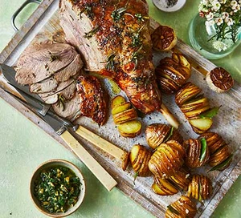

Roast Dinner

Use a small, sharp knife to make at least 30 small, deep, incisions all over the lamb. Halve the garlic bulbs, so at the top the cloves fall away and at the bottom, they remain attached. Peel and slice the tops that have fallen away and keep the other halves for later. Use your fingers to push the slices into each slit. Next, pull off small sprigs of rosemary and thyme, keeping the stalks on, and poke them into the slits, too. Can be done a day ahead, then cover the lamb and chill. Remove from the fridge 1 hr before roasting.
Heat oven to 210C/190C fan/gas 7. Sit each potato between the handles of two wooden spoons and cut widthways at 3mm intervals – the spoon handles will stop you slicing all the way through. Slot a bay leaf into the middle slit of each potato. Tip the potatoes into a large roasting tin with the halved garlic bulb and the rest of the rosemary and thyme. Drizzle with half the oil and season, then toss to coat and turn the potatoes so they’re all cut-side up. Nestle the lamb in the middle of the tin, pushing the potatoes to the outside, then rub the lamb with the rest of the oil and the lemon juice and season generously.
Roast for 1 hr 30 mins, basting the potatoes and shaking the tin occasionally, until the lamb is dark brown and the potatoes are crisp and golden. The lamb will be pink in the middle but cooked. For rare, cook for 10 mins less, and for well done, 15 mins more. Remove the lamb from the tin and leave to rest for 15 mins, putting the potatoes back in the oven if you need to. Serve drizzled with our green olive & herb dressing.